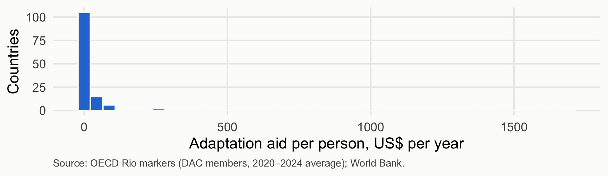
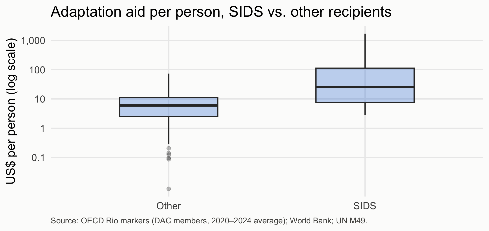
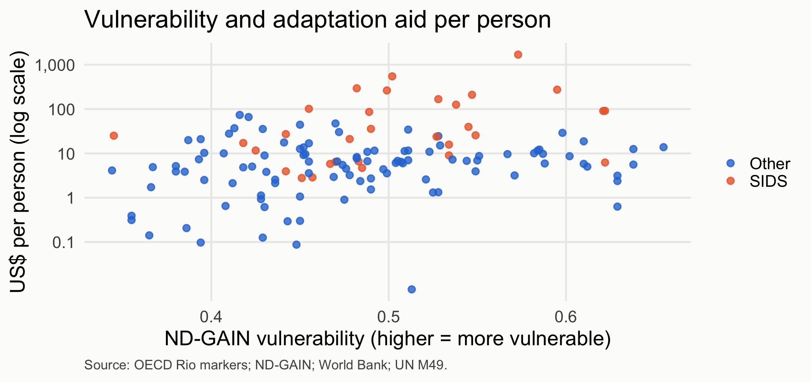

aid <- read_csv("data/adaptation_aid.csv")
glimpse(aid)Lab: summary statistics, one figure, one test
POLS 081 · Global Environmental Governance
November 18, 2026
| Time | What we do |
|---|---|
| 2:45 | Get the files; anatomy of a Quarto document |
| 2:55 | Load and look at the data |
| 3:00 | Summary statistics |
| 3:10 | One good figure |
| 3:20 | One statistical test |
| 3:30 | Your turn: Example 2 |
| 3:45 | Render to PDF |
| 3:50 | Bring it back to your paper |
The recipe for every data paper question:
summary statistics → one good figure → one statistical test
We’ll walk through Example 1 together. You’ll do Example 2 yourself. The Workshop Questions are for after class.
pols081-lab.zip from the workshop website (Part 2 page).pols081-lab.Rproj. RStudio opens in that folder.lab-handout.qmd.Check: run the first chunk, library(tidyverse). A list of packages with ✔ marks means you’re ready. Hand up if you see an error.
--- lines: title, author, output format (typst makes a PDF)Run a chunk: ▶ or Cmd/Ctrl + Shift + Enter
Render the whole file: the Render button
A simple, descriptive version of Tennant et al. (2024)
Rows: 134
Columns: 8
$ country <chr> "Afghanistan", "Albania", "Algeria", "Angola", "Antigua…
$ iso3c <chr> "AFG", "ALB", "DZA", "AGO", "ATG", "ARG", "ARM", "AZE",…
$ region <chr> "Middle East, North Africa, Afghanistan & Pakistan", "E…
$ income_group <chr> "Low income", "Upper middle income", "Upper middle inco…
$ sids <chr> "Other", "Other", "Other", "Other", "SIDS", "Other", "O…
$ population <dbl> 41454761, 2411658, 46164219, 36749906, 93316, 45538401,…
$ vulnerability <dbl> 0.612, 0.416, 0.430, 0.528, 0.485, 0.408, 0.394, 0.428,…
$ adapt_aid_musd <dbl> 208.061, 177.871, 28.381, 48.847, 0.439, 29.661, 62.074…Large countries get more aid in total simply because they have more people. Make a per-person measure:
Every measure is a choice. Total aid answers where does the money go? Aid per person answers how much does each person’s country get? They tell different stories. Say which you use and why.
Mean · median · spread · groups · shares
# A tibble: 1 × 4
mean median sd n
<dbl> <dbl> <dbl> <int>
1 39.2 6.86 159. 134
In total (US$ millions per year)
| Country | SIDS? | Total |
|---|---|---|
| India | Other | 1299 |
| Bangladesh | Other | 1164 |
| Indonesia | Other | 1076 |
| Philippines | Other | 1031 |
| Ethiopia | Other | 771 |
| Cambodia | Other | 528 |
| Colombia | Other | 524 |
| Morocco | Other | 477 |
Per person (US$ per year)
| Country | SIDS? | Per person |
|---|---|---|
| Tuvalu | SIDS | 1693 |
| Naoero (Nauru) | SIDS | 547 |
| Palau | SIDS | 294 |
| Tonga | SIDS | 274 |
| Marshall Islands | SIDS | 263 |
| Vanuatu | SIDS | 210 |
| Kiribati | SIDS | 168 |
| Samoa | SIDS | 126 |
arrange(desc(...)) sorts, select() picks columns, slice_head(n = 8) keeps the top rows.
# A tibble: 2 × 4
sids median_pc mean_pc n
<chr> <dbl> <dbl> <int>
1 Other 5.99 9.83 103
2 SIDS 25.6 137. 31One question · honest axes · plain labels · a source · a takeaway


Your takeaway sentence? Call one out.
Could chance alone produce a pattern this strong?
Pearson's product-moment correlation
data: aid$vulnerability and log(aid$aid_pc)
t = 3.2341, df = 132, p-value = 0.001542
alternative hypothesis: true correlation is not equal to 0
95 percent confidence interval:
0.1062558 0.4211952
sample estimates:
cor
0.2709616
Welch Two Sample t-test
data: aid_pc by sids
t = -2.2527, df = 30.03, p-value = 0.03174
alternative hypothesis: true difference in means between group Other and group SIDS is not equal to 0
95 percent confidence interval:
-241.80448 -11.85043
sample estimates:
mean in group Other mean in group SIDS
9.832621 136.660076 A small p-value says chance alone is an unlikely explanation. It doesn’t say why, and it doesn’t say how much it matters.
15 minutes, with a neighbor. In lab-handout.qmd, go to Example 2: Renewable Energy and National Income. Fill in each blank chunk using Example 1 as your model.
Look closely at your result. Does “renewable share” measure a clean-energy transition? Hint: what counts as renewable in poor countries?
.qmd.If it fails:
library(tidyverse) didn’t run.qmd isn’t in the folder with data/| Question type | Summary statistics | One good figure | A test, if you want one |
|---|---|---|---|
| Change over time | Values by year; change from start to end | Line chart | Often none; describe the trend |
| Distribution | Mean, median, top 10, spread | Bar chart of top units; histogram | Usually none |
| Comparison | Mean/median by group | Boxplot or bar chart by group | t-test (two groups) |
| Composition | Shares of a total | Stacked or simple bar chart of shares | Usually none |
| Relationship | Correlation | Scatterplot | Correlation test |
2 minutes. Look at your question ladder from Part 1. Which row is your question in? Write down the one figure you’d make first.
lab-handout.qmdmerging-data.qmd in the same folderA careful description, an honest figure and a clear statement of what you can and cannot conclude: that’s a strong data paper.
POLS 081 · SSQL Workshop · Part 2